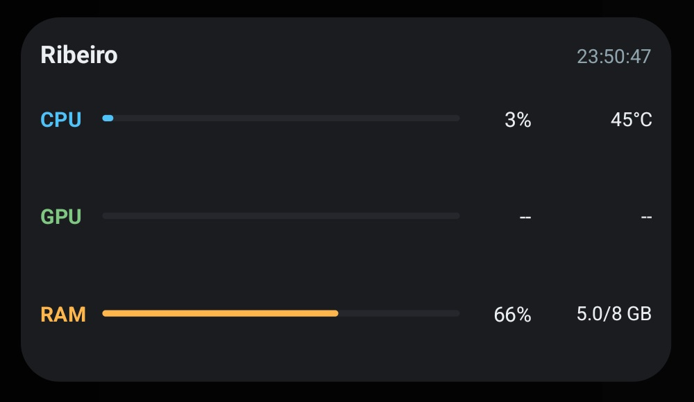
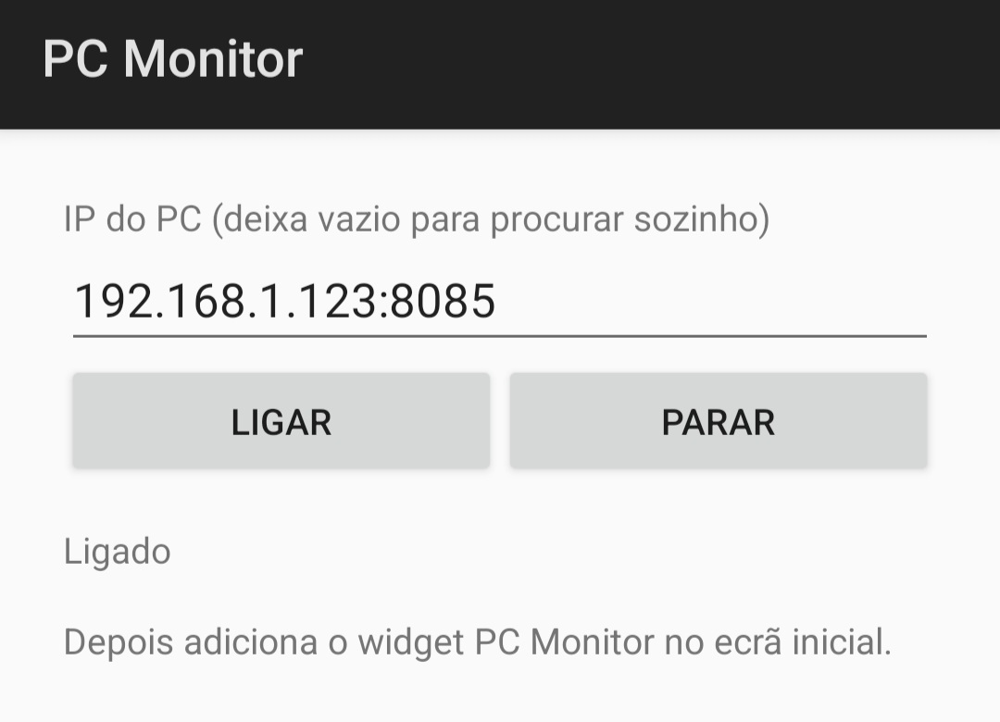

O DeskStats mostra o CPU, a GPU, a RAM e as temperaturas do computador num widget do ecrã inicial. Sem cabos e sem contas: o PC e o telemóvel só têm de estar na mesma rede.
Um agente pequeno no PC e um widget no telemóvel. Mais nada.
Uso em percentagem, memória em GB e a temperatura do processador e da placa gráfica.
Lê os sensores do Linux. Funciona com Intel, AMD Ryzen, placas NVIDIA e AMD.
Deixas o campo do IP vazio, carregas em Ligar e a app procura o PC na rede.
Não precisas de abrir a app. Os valores aparecem no ecrã inicial com o nome do PC e a hora da última leitura.
O instalador põe o agente a arrancar sozinho quando entras na sessão.
Só precisa de Python 3. Nada sai da tua rede: o telemóvel fala diretamente com o PC.
O widget no ecrã inicial e a app onde ligas ao PC. Clica numa imagem para a ampliar.


Funciona em qualquer distro Linux com Python 3. Se tiveres ufw ou firewalld, o instalador abre a porta 8085.
Descarrega o APK e instala-o. Se o Android pedir, permite instalar apps de fontes desconhecidas.
DeskStats.apkcurl -fsSL https://raw.githubusercontent.com/Ribeiro-MD/DeskStats-Instalador/main/install.sh | shNo fim mostra o IP a usar no telemóvel, por exemplo 192.168.1.123:8085.
Abre a app, deixa o IP vazio e carrega em Ligar. Depois adiciona o widget PC Monitor no ecrã inicial.
Duas peças que falam uma com a outra.
/proc e os sensores a cada segundo.8085.Tira o agente, o arranque automático e os ficheiros.
curl -fsSL https://raw.githubusercontent.com/Ribeiro-MD/DeskStats-Instalador/main/install.sh | sh -s removerO que costuma aparecer.
Confirma que o PC e o telemóvel estão na mesma rede Wi-Fi e que o agente está a correr. Se continuar, escreve o IP que o instalador mostrou (com :8085).
O PC não tem placa gráfica dedicada ou não a consegue ler. Nas NVIDIA é preciso o nvidia-smi (vem com o driver), nas AMD o driver amdgpu.
Não. O telemóvel liga diretamente ao PC, por isso têm de estar na mesma rede.
Não. O agente instala-se só para o teu utilizador. Só a regra da firewall, se existir, pede a palavra-passe.
Por agora o agente é só para Linux.